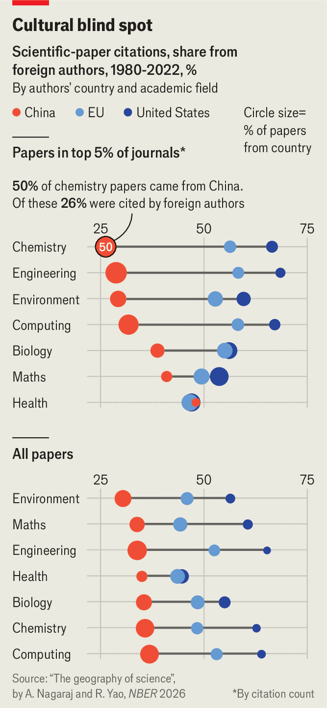

Too much Chinese science is ignored by the West
A bad reputation and cultural ignorance are probably responsible
June 11th 2026

Chinese authors published as many papers as American, British, German and Japanese researchers combined in 2025. Yet two recent analyses drawing on databases of tens of millions of English-language scientific articles suggest they were largely overlooked by Western researchers. That is not for lack of value: China leads the Nature index, a ranking of countries by number of papers published in a set of respected journals.
Both new analyses tracked how academic papers were cited by others. The first, a working paper by Abhishek Nagaraj of the University of California, Berkeley, and Randol Yao of the Massachusetts Institute of Technology, was published in January. It found that between 1980 and 2022, only about one-third of citations of Chinese papers came from outside the country, compared with around half for America and the European Union. The pattern was largely the same for papers published in the top 5% of journals and papers ranked in the top 1% by citations.

The second analysis, posted by a Chinese-Dutch team on the preprint server arXiv in April, found that even though American, British, French, German and Japanese teams have become more likely to cite Chinese research since 2000, citations of Chinese work in 2022 were still much lower than expected based on factors like the quantity of scientific output. There was a striking imbalance: Chinese researchers cited American work more than expected; American researchers cited Chinese work less than expected.
Some of this may be artefact. The first result could be swayed by colleagues excessively citing each other’s work to drive up metrics. The second does not account for differences in the average quality of science done in each place.
At the request of The Economist, Dr Nagaraj and Dr Yao split their analysis by academic field. They found that Chinese researchers are particularly likely to cite each other’s research in fields like chemistry and engineering where Chinese labs produce the bulk of cutting-edge work. With fewer scientists abroad working in these fields more citations come from home. Chinese research may be more concentrated in fields in which only local researchers are at the frontier.
Another explanation is trust. According to data from Retraction Watch, papers published by Chinese authors between 1996 and 2025 were around six times more likely to be retracted than those by American or British ones. Before the Chinese government banned the practices in 2020, universities often gave researchers publication quotas or paid them bonuses for publication. Authorities have also tried to tackle the problem by cracking down on paper mills and reforming academic evaluation. But reputations take time to repair.
Ignorance compounds the problem. Western researchers are often unfamiliar with the hierarchy of Chinese institutions and struggle to distinguish similar-sounding names, says Dorothy Bishop, a retired experimental psychologist at Oxford University who investigates research fraud.
The share of Chinese papers with international collaborations is also in decline, in part owing to geopolitical tensions. In 2024, 18% had a foreign co-author, down from 24% between 2000 and 2019.
Each study has its weaknesses. Whatever the cause, overlooking Chinese research has consequences. Ideas spread more slowly and breakthroughs take longer when researchers miss valuable work. As China becomes an ever larger source of new knowledge, the cost of such blind spots will grow. ■
To track the trends shaping commerce, industry and technology, sign up to “The Bottom Line”, our weekly subscriber-only newsletter on global business.